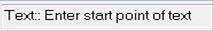
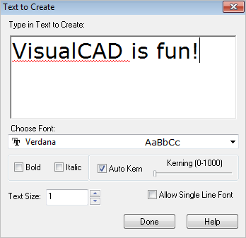
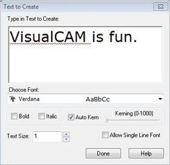
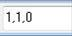

Create text curves from keyed-in text. The outlines of letters are created as a series of separate curves.
Enter parameters and text in dialog.

|
 Dialog Box: Text to Create
VisualCAD supports over 300 different text fonts. Select one from the list.
|
Kerning is the process of adjusting the spacing between characters in a proportional font, usually to achieve a visually pleasing result. Kerning adjusts the space between individual letter forms, while tracking (letter-spacing) adjusts spacing uniformly over a range of characters. In a well-kerned font, the two-dimensional blank spaces between each pair of characters all have a visually similar area.
•Use the slider to adjust Kerning or check the box to Auto Kerning. |
•Bold/Italic •Text Size •Allow Single Line Font |
|
|
Screen Action
|
Comments
|
Step 1
|

|
Font: font style, size, bold, and italic can be specified.
Kerning slider bar: The spacing between the characters can be set between 0 (closest) to 1000 (farthest).
Enter text.
|
Step 2
|
|
(Optional) Enter X, Y, [Z] coordinates for the text start point

|
Final
|
|
Top line kerning = 0
Middle line kerning = 250
Bottom line kerning = 500
|
|
1.The text curves will be created on a plane parallel to the Construction Plane. 2.After the text is created, the curves can be independently manipulated. |